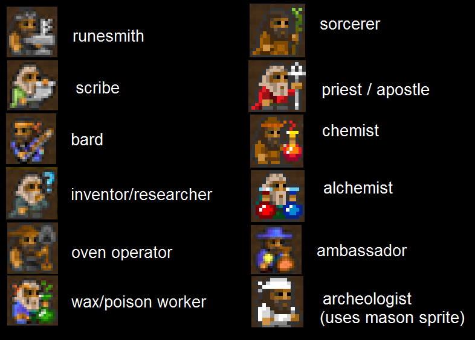

Quicklinks
::: Settings ::: Races ::: Creatures ::: Materials ::: Workshops ::: Furnaces ::: Misc ::: Utilities ::: Links :::
DISCLAIMER: This page is rather outdated. Please excuse.
This mod includes a VB program that allows you to enable and disable several parts of the mod. You can toggle complete industries, single buildings and balancing options. The default settings is how I do test and balance the game. This is the way the mod should be played. If you do change the settings and notice error-logs, Imbalances, dead civs in worldgen... well, then there is not much I can do about it, since you yourself did choose this special setup. If there are serious errors or crashes, please leave a report. I did add a selection of balancing options, which are clearly labeled as: "Harder XYZ". Turning these off will help players that encounter problems.
The Orc Fortress Button will switch entities. You will start with orcs instead of dwarves. This makes the workshop and furnace, as well as the biggest parts of the material and misc feature section useless. The changes are for the dwarf race only, and no special options within the Orc Plugin exist.
All buttons have a tooltip. Just hover your mouse above it for a short explanation of the option.
WARNING: You need Windows .NET for this to run, or Mono+Wine on Linux.
WARNING: All changes, except the ones on the first page, require a need world to be created.

You can change all of these settings without genning a new world, with the exception of the tilesets. The options should be very straightforward. I will only explain the modded additions.
WARNING: Many features of the mod require temperature to be on. Disable at own risk.
Digging Stop: This will disable the pause/recenter whenever you encounter hot/damp stones. The stones will not be mined, but at least the game wont pause all the time.
Masterwork Font: This toggles between the vanilla DF font and the new gothic looking type.
Masterwork Arena: This toggles between the vanilla DF arena and a new collosseum like looking one.
Tilesets: You have 10 tilesets to choose from. Ascii, CLA, Ironhand, JollyBastion, JollyBastion with a different font, Phoebus, Vherid, Soviet, Taffer and Matrix. The button cycles through them, sorted alphabetically.
Colors: You have 18 colors to choose from. These coloschemes have quite a big impact, so try some out. Keep in mind the CLA, Jolly and Matrix should be used together with the fitting tileset.
Turning a race on will add them to the next world, turning them off will not spawn those races.
Invaders are the normal races that attack in sieges. Kobolds, Goblins and Orcs are rather easy, while Frost giants, Warlocks and Automatons are harder. These three also drop special loot, so they are worth killing.
Friendly races are your allies. You cant disable the dwarven caravans, but if you want less trading and diplomats, then turn them off.
Cave Races will siege and ambush you from the caverns. This makes the game a lot harder, not because these sieges are harder then normal ones, but because people are not used to this. They can also trigger before you discovered a cavern, and spawn randomly in all three cavern depths. Batmen can fly, and might come up to you, if you give them the chance.
The Fortress defense mod races are included for even additional fun. Please mind that I don't balance those, and that the original Df has only one evil race. The mod has five, as well as four underground. Add even more at your own risk. You can find a readme about the mod here.
Domestic pets adds more specialized pets that you can buy at embark.
Megabeasts adds more custom megabeasts. Leave this one for their special rewards.
Caverns adds many more wildlife to the underground areas.
Giant animals will disable all giant versions.
Animal men will disable all animal man versions.
Magical beings adds a couple of animated object creatures, like material-men. Some people thought these unfitting to the theme of DF, so I seperated it from the rest.
Animals will add the new real life critters of Toady's animal drive.
Birds will add the new real life birds of Toady's animal drive.
Vermin will add new modded vermin. They eat more of your stuff.
Monster adds more fantastic creatures.
Fish will add the new real life fishes of Toady's animal drive.
Hell will add several custom written demons to hell.
The Evil twins are carbon copies of your allies, and can be turned on for extra fun. You can have war against chaos dwarves, bandit humans, fanatic elves and deep drow, even while being allied with the real ones. They can also be used as allies for your Orc Fortress. In that case the good ones will attack you, and the evil ones will be your friends.
Secret Fun adds another level of meta gaming and difficulty. You can face threats that spawn inside your fortress, making turtling, moats, wall-ins and traps a lot less useful. It makes the game difficult for beginners of the mod.
Randomly generated creature deserve some more information. Clicking the button "Generate Creatures" opens a utilitiy written by Talvieno. You can enter a number between 10 and 1000 press enter. After a while, depending on how many creatures you wanted, the files are created in the raws. You now have creatures and entities. Entitiy creatures only use melee weapons, they wont have ranged weapons and/or ammo. They are procedually generated, like Titans, Demons and FBs. They have no sprites, only ascii-characters. If you want to play with creatures only and no entities, please click once on "Delete Entities" If you want to delete what you made, press once on "Delete Creatures"
Generating a new batch of creatures will replace the old ones.
Simple trees will reduce the type of trees. The total amount will stay the same, and standardized wood will always be enabled, because all reactions are based on this one material. I couldn't chance it if I wanted.
Simple gems will reduce the type of gems. The total amount will stay the same, and it will greatly shorten the list in the jeweler. You can also find more rare jewels easier with simple gems on.
Simple soil will reduce the type soil, sand and clay. Only one type of sand remains, two clays and two soils. Sand for sand, clay for earthenware, fireclay for stoneware, soil for farming and peat for farming and possible coal.
Simple Stones will reduce the type of stones. The total amount will stay the same. It greatly helps the construction lists, and will make your fortress more mono-colored, and less patchwork looking.
Simple Minerals will reduce the type of metal ores. The total amount will stay the same, but you might find useless ones removed. The mod will still give you plenty of ore to smelt.
Simple pets will reduce the type of domestic pets. Less useless creatures at embark and in caravans. I removed redundant critters, that fill no unique role. You can still find all types of leather, wool, milk, war animals and vermin hunters.
Simple toys will standardize all toys to one type, called "toys"
Simple meat will standardize all butchery products that are edible, like eye, brain, lung, kidney and so on, to one type, called "meat" This results in one big stack of meat, making hauling and cooking more efficient, as well as stockpiling easier.
More tree types will add all trees of the flora and fauna mod. A lot.
More plant types will add all plants of the flora and fauna mod. A lot. See a list of all plants with features here.
More food adds more names for meals produces in the kitchen. It does not affect anything, only adds a bit more flavor to the game. Since people wont really see any negative effect on stockpiles, this option is on by default.
More instruments adds a big selection of real world instruments to the game. They have no use, besides adding flavor.
More toys adds a big selection of toys and dolls to the game. They have no use, besides adding flavor.
More engravings adds a vast amount of new pictures your stone engravers can produce. The same if true for decorations on items. Since this ensures much more interesting items, it is on by default.
You can disable every single workshop in the mod, one by one here. For some options, even the respective materials are removed. Turning Archeology off will not just remove the Archeologist, but also all fossils you could possibly find.
I will not go into detail here, because the buildings have their own section in this manual.
WARNING: Several building share reagents, you need one to use the other to the full extent:
Architects Study will produce special blueprints for furnaces.
Researchers Study uses souls gained from megabeasts. Use with slaughterhouse, to butcher the megabeast first.
Chemist produces black powder. Needed for guns, use with gunsmith.
Boneyard produces bone materials for the Church of the dark depths.
Engineer upgrades traps. You don't need it, if you play with "weaker traps:off" in the misc feature section.
Temples are needed to reveal the Cult. Use with "Secret Fun" from the creatures section.
Shrines are needed for sacrifices of Warlock loot.
Timberyard enables tree farming. You have no way of processing farmed trees otherwise. Recommended to leave it in.
Scriptorium is needed to write essays and books. Libraries without it are rather pointless.
Decorations have no reactions, the only exception is the fountain, in which you can train swimming.
Guildhall and Garrison needs the caste system under "misc settings" active. If you have no castes, you cant join guilds. That would actually crash the game, so either disable both, or none.
Here you can toggle every single furnace in the game. The normal version and the magma version are grouped together in one button.
I will not go into detail here, because the buildings have their own section in this manual. Just some quick reminders: Removing the slag pit will also remove slag from the game. All alloys have been moved to the metallurgist, so you should probably keep that one, at the very least. Golem Forge, Armory, Weaponry, Gunsmith and Runesmith need special blueprints, gained from expeditions, trading or research. The same counts for the weather control decive, the artificer and the machine factory, which runs mostly of dead automatons. You can also recycle destroyed turrets for clockwork parts, which are used to make new ones.
(The warpstone lab is currently off by default, since it has no reactions yet)
WARNING: Both the steam engine and the runesmith need dfhack to be active.
Aquifers removes water-spawning layers from the field. You can still find tears of armok, a gem with an aquifer.
Harder smithing will increase the amount of bars needed for some items.
Harder farming will increase the amount of time till a plant is fully grown. Aboveground plants need 2 seasons, and belowground plants will need 4 seasons.
Harder Smelting will add fires and poisonous gas to the smelting process. Usually not deadly. It also reduces the output of ores by 50%. This only counts of the smelter, not the advanced furnaces.
Harder Mining will add coal dust that can cause lungs to rot when mining lignite or bituminous coal, as well as warpstone. Warpstone can make miners sleepy/dizzy, and in very rare cases, kill. You also need to mine warpstone for special weapons build with it. It will also add 2 spawnable creatures into the rock. Soggoths and Balrogs. Your miner might uncover them while digging and be attacked. You will get a notification, the game will pause and you have a few seconds before the creature actually spawns.
Harder learning lowers the speed at which dwarves raise skills. Does not affect castes, so a Legion dwarf is still a beast.
Invader Mat Boost will give invaders better materials to fight. More steelclad enemies, some even above steel grade.
Invader Lvl Boost will give each invading unit 5 skill points in all combat skills. This is a serious rise in difficulty, and only recommended for people that think the game is way to easy.
Weaker traps reduces the power of trap components. You can still upgrade them ingame in the Trap Engineer, to their old, powerful form.
Bodyguards simply adds or removes guards to caravans. Turn off for an increased challenge.
Extra Vanilla Buildings Reactions will add all kinds of things to existing building. I will not go into detail here, because the buildings have their own section in this manual. The only point of note is the soapmaker. It will not add extra reactions, but instead add/remove the soapmaker workshop. Soap is made in the chemist in this mod, but for people that dislike the chemist I left this option in. You can also have both soapmaker and chemist, if you wish.
Castes will add a powerful caste system, with different dwarves having different natural skills.
Transformation Msg., which stands for Message, will toggle game pause, recenter of the camera and a pop-up box ingame. Every time anything transforms, which can be a sign of something important happening, like a lich spawning inside your fort, or a golem being manufactured, you will get a notification. Since some people rather have no forced pauses, this is optional.
English dwarves is a fun little change that translates all dwarven names into english. You will get names like "Dagger Mysticalanvil" and "Planepacked Machinecage". Intrepid users can even apply this to a running fort with a little work of themselves, to see how all their dwarven names really mean.
Cavern flavor adds the different plants and grasses that change the coloring significantly. First caverns is full of moss and mushrooms, second one with crystals and glass, third one looks like a dungeon with plants growing through the cracks. If it hurts your eyes, turn it off... otherwise you should leave this on, because the newly added plants do have special uses.
Regional weather adds more types of rains to evil and good biomes. Good rains help feed dwarves, or give them alcohol.
Regional interactions adds more types of interactions to good and evil biomes. Good biomes instantly kill undeads that enter them. This is good fun on embarks with both evil and good biomes.
Smoke Effects adds harmless clouds generated in workshops. Dust when you work with stone, sawmill with wood, sparks from metal, smoke from coke... has no further effect but to add some activity to the workshop areas. You need temperature on to use this.
New Nobles add the Overseer, which is only decorational and to be used in Succession Forts. You also get access to the Psychiatrist. They console angry or sad dwarves, so they don't run to the mayor and complain at him all the time. This allows the mayor to make more important jobs, like liaison meetings and requesting rose gold socks.
Battlecries adds a purely ornamental feature, dwarves and other sentient creatures can identify each other in combat and yell fitting insults and threats at each other. This is the first release featuring battlecries, so if the combat log turns out to be too full of them, please let me know.

Not much to say here. Click on the name to run the selected utility. Thats about it.
Large Adr. Aware allows you to patch the Dwarf Fortress.exe to use 4gb of ram. Only use this if you have 3gb or more.
WARNING: Embark Everywhere needs to be run while you are in the embark screen. You can then embark on fortresses, tombs, necromancer towers... as you like. You will meet quite a few hostile units in these locations, just a friendly warning.

The top menu bar lists a handful of links, mostly for more information. It has a list of all uility-threads as well. You can open the manuals direcly from there, have a look at several other mods that I recommend, or click on the heart to donate by using paypal. If you do this: Thank you :)
|